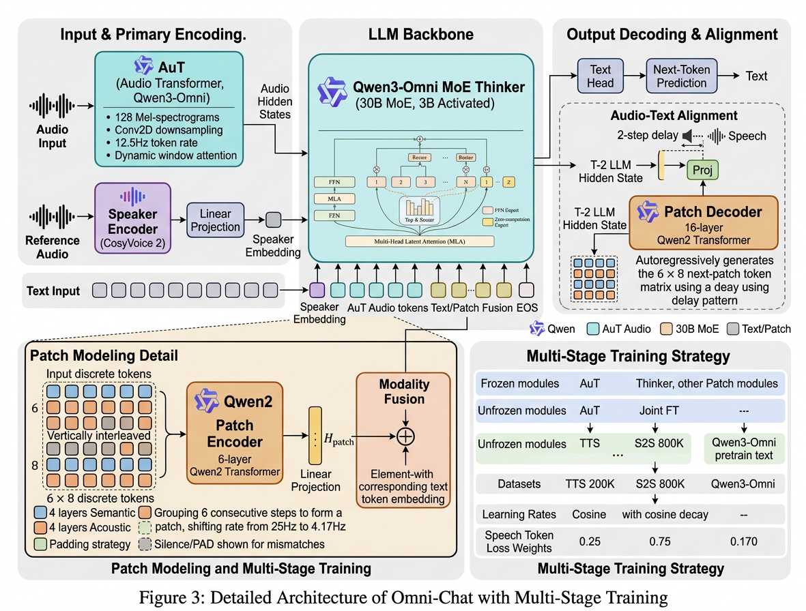
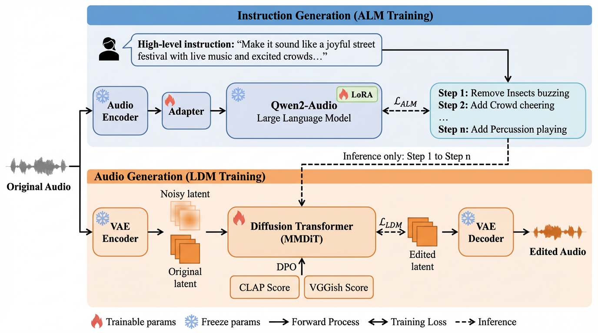

👋 About Me
I am a Senior Research Scientist at Alibaba Group. My research focuses on building unified foundation models for audio processing and generation, spanning speech enhancement (SE), super-resolution (SR), speech separation (SS), target speaker extraction (TSE), voice conversion (VC), and text-to-audio synthesis (TTA).
Skills & Research Interests
News
- 2026.05 🚀 We release HCodec-Spatial, a Spatial Audio Codec for Stereo Encoding and Mono-to-Stereo Spatialization. Code
- 2026.05 🚀 Will open-source QuarkAudio-Chat, an end-to-end spoken dialogue large model for seamless speech-audio-language interaction.
- 2026.05 🚀 Will open-source QuarkAudio-Hcodec3.0, a next-generation neural audio codec with performance surpassing MOSS-Audio-Tokenizer.
- 2026.01 🎉 Our hybrid system paper is accepted to ICASSP 2026! We achieved 3rd place in the URGENT 2026 Challenge (Track 1).
- 2025.12 Released QuarkAudio, an open-source project to unify audio processing and generation.
- 2025.10 Released UniTok-Audio, supporting SOTA target speaker extraction and voice conversion.
- 2025.09 Released UniSE foundation model for unified speech enhancement.
Selected Publications


Working Papers




Honors and Awards
- Outstanding Graduate of Chinese Academy of Sciences (UCAS) (Top 5%) 2022.07
- National Scholarship (Master) 2021.12
- National Graduate Mathematical Contest in Modeling — Second Prize 2020.12
- National Scholarship (Undergraduate) 2018.10
- National Mathematics Competition for College Students — Second Prize 2017.09
Experience
Alibaba Group — Senior Audio Algorithm Engineer
Leading the open-source QuarkAudio and Speech processing project. Building unified foundation models for audio processing and generation.
Horizon Robotics — Speech Algorithm Researcher
On-device speech enhancement and hardware-aware audio algorithms for automotive applications.
Education
University of Chinese Academy of Sciences — M.S. in Acoustics
Ocean University of China — B.S. in Marine Technology